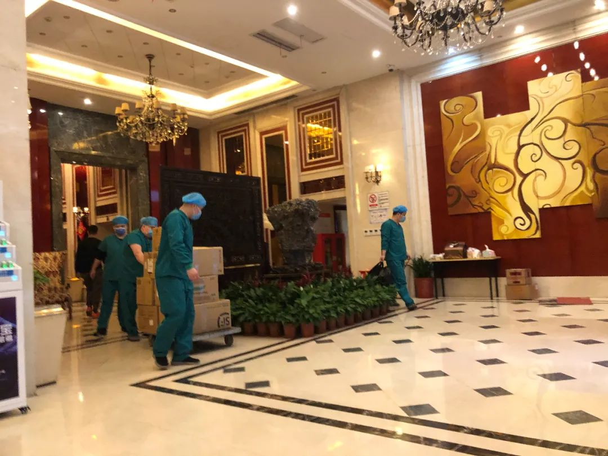
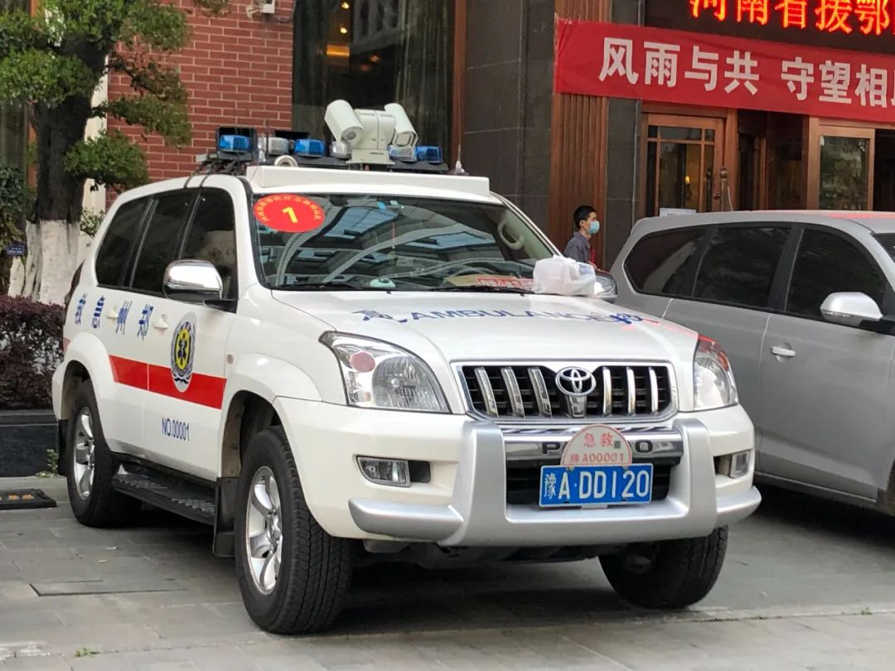

我在武汉当120救护车驾驶员：转运患者，摆渡生命
原文链接 备份链接 工作中的王海涛。摄影：付春来 记者：杨舒鸿吉 “ 救护车内的方寸空间，是摆渡生命的“方舟”，有时候承载的是命运流转的重要瞬间。 ” 每次出车转运新冠肺炎患者，对于武汉120救护车驾驶员王海涛而言，都是一次生命的“摆 …

“刚来时想到了困难，但没想到这么困难”

3月20日上午，一支转运了2525名患者的特殊队伍正式撤离武汉。队员们在武汉疾控中心门前合影、唱歌、拥抱，仿佛那些曾切实经历过的苦难，将就此尘封。

转运队队员即将撤离武汉
组织援鄂医疗救援转运队的指令是在2月4日晚8点传到河南省急救中心的。
那是一则不断加码的指令，需备物资的天数，6小时内翻了3倍。各急救站来不及筹备，只能连夜征用其它出诊车上的物资，A车队22个N95口罩、B车队6套防护服……200多套有零有整地堆起来，总算达到指令要求的“最多备10天”。
谁知一待就是45日。路况不熟、物资不够，作为全国唯一一支援鄂医疗救援转运队，他们没有任何经验可以借鉴。81名急救员和21台车（救护车是19台、指挥车1台、物资车1台）穿梭在武汉街头巷尾，路上熟悉的元素只有响个不停的警笛声。
收了没？收了没？
转运队的前期准备工作是十分顺畅的：2月5日下午到达武汉，晚上和武汉急救队交接组队（武汉10辆转运急救车，河南18辆转运急救车）；2月6日凌晨4点在酒店内完成院感培训，上午领任务，下午2点投入工作。
可救援现场的问题远不止“人生地不熟”那么简单。
信息不通畅，医院没有床，现场经常出现救护车里“压”患者的情况。车队转运的第一个患者曾在协和医院门口停了近6个小时，形势严峻时，一家医院门口能同时滞留六七辆载着患者的救护车。
指挥部的人一样干等着。河南援鄂医疗救援转运队副总指挥燕重远今年46岁了。过去几十年里，他曾是一名120急救员，还参加过汶川救灾等多项重大救援工作。这一次，他负责转运车队的具体调度。

河南援鄂医疗救援转运队副总指挥燕重远
他告诉中国新闻周刊，自己曾看到很多报道救护车不及时转运患者的新闻，他无法反驳，也变不出空床位，只能一遍遍打电话问队员：收了没？收了没？
患者之外，让他担忧不已的，还有工作内容大大超过日常范围的一线急救员。漫长的等待中，患者上厕所、氧气吸光等状况都由急救员处理。金银潭医院、红十字会医院等重点院区的医护人员没空接患者，要由急救员将其送到具体楼层。
问题是，为了省防护服，很多急救车根本没达到每车4人的标准配置。于是，医院里会出现一个急救员歪歪扭扭地推着患者，边导航边问路寻找病区的场景。
为搬运患者长期走动的过程中，有的急救员N95口罩被汗浸湿了，有的防护服被刮破、鞋套全部撕开。现实条件不允许第一时间更换，更满足不了一车一换，急救员心知肚明，便冒着感染病毒的风险继续工作。
“刚来时想到了困难，但没想到这么困难。不瞒你说，我们第一天出诊，至少有3个队员尿裤子。”3月20日的撤离现场，他望着不远处正笑着合照的队员哭着说：“都是成年人，确实不容易。”
从轻症到重症
30岁的急救员王京春清晰地记得2月4日晚10点收到的医院通知——有事。当时，他还以为是之前“请战”在河南一线防疫的事有了着落，直到凌晨2点具体通知下达，他才知道，自己要去武汉了。
转运队初期的工作以转运轻症病人为主，“应收尽收”政策要求下，患者数量多到一车坐4、5个。王京春性子急，遇见医院床满不收患者的情况会特别焦躁，“因为一点小事，莫名其妙地跟谁都能发起火来”。
同一时间的燕重远正忙着和总指挥调整策略。小到给急救员手机缠保鲜膜、买纸尿裤，大到早操查车、分救护梯队，每一项都要立刻推进。直至2月下旬武汉物资情况缓和，整个转运队的紧绷状态才有所缓解。

撤离前一晚，转运队队员在酒店门前集合，准备乘大巴去看武汉夜景。
3月12日，武汉市新冠肺炎疫情防控指挥部医疗救治组医疗组组长白祥军在新闻发布会上表示，将把全市50多家收治新冠肺炎患者的定点医院，向医疗资源丰富的10家医院集中。转运队的工作重点由此从“转轻症”变成“转重症”。
转诊量少了，患者的病情危重程度却高了。“最多的时候，上呼吸机的ICU病人，我们一天攒了6个。这6个病人和我们前期一天转的40个、50个又不是一个概念了。”燕重远说。
更重要的是，转运队面临的独有限制依然存在。国家卫健委要求落实三级查房制度，即住院医师、主治医师、主任（副主任）医师或科主任查房。可队伍人力无法满足在每辆车上配满三级医师，救护车也装不下这么多人。
无奈之下，指挥部只能采取负责医生把病例发到工作微信群、高职称医师们线上评估重症患者转运风险的方式。呼吸不稳不能转、血氧饱和度达不到90%不能转、血压不稳不能转……消息一来一回，免不了消耗时间。
等待调派指令期间，王京春被重症患者的痛苦状态深深震撼着。
“一对老夫妇，80多岁，自己买个行军床，弄个氧气瓶，坐在那吸氧。医生测一下血氧饱和度，好，走了。血氧饱和度比较低，他们特别难熬，医院全都是人，没有医生护士能有空搭理他们一下。”
他告诉中国新闻周刊，后来老夫妇符合转运条件，被送到了更好的医院救护。但即便是在采访现场，他一闭眼，最先浮现出来的患者面孔还是他们。
离开武汉之前
转运队入住的酒店位于武汉疾控中心旁，距华南海鲜市场只有539米的步行路程。3月19日晚，所有队员在这里列队，打算在撤离前看一看武汉的夜景。
“队员平常戴着眼镜、面罩，看不到武汉的美，我就说能不能找两个大巴，让他们逛一下。”援鄂医疗救援转运队队长、总指挥乔伍营告诉中国新闻周刊。
在他身后停着一辆编号NO.00001的郑州急救车，后者曾参加汶川救灾、印尼海啸救灾等多项救援工作。燕重远称，这支平均年龄约30岁的转运队几乎和这台车一样“历史悠久”，近三分之一的队员有从伍经历。这些都保证了队伍可以迅速适应工作、调整心态。

参加过多次重大救援工作的急救车
“心理医生说我们是‘嗷嗷乱叫’的队，像西亚山的老虎。有时大家都收工睡觉了，我在工作群里发转运需求，马上有人‘抢单’。抢不到的人说上次他们去过了，抢到的说谁让你上次没拿手机了？很快乐。”他说。
但他不否认，快乐的背后是高强度工作带来的重压。因救护车工作时间不定，2月29日之前，转运队队员始终吃不到热饭，没有微波炉，只能把米饭扒出来，开水一冲了事。很多队员表示，现在已经到了“一提盒饭就想吐”的地步。
燕重远认为，更辛苦的是从2019年12月就投入工作的武汉急救队。目前，武汉10家定点医院中都有病人，他们的工作远没有到结束的时候。
3月20日上午，转运队正式撤离。组织整队之前，队员们笑着在酒店和武汉疾控中心门前合影。也有的队员会哭，媒体的摄像机和手机会在第一时间把流泪的人围起来。
据了解，转运队回到河南后，会进行为期14天的集中隔离。“武汉人民非常感谢我们，我觉得很自豪。”王京春操着浓重的河南口音说，“这是真的，不是大空话。”
他说，以前没感觉，要走的时候，会发现这里的人是那么团结。还有，昨晚的鸡腿“特别香”。
图：冯超
值班编辑：石若萧
推荐阅读
▼


原文链接 备份链接 工作中的王海涛。摄影：付春来 记者：杨舒鸿吉 “ 救护车内的方寸空间，是摆渡生命的“方舟”，有时候承载的是命运流转的重要瞬间。 ” 每次出车转运新冠肺炎患者，对于武汉120救护车驾驶员王海涛而言，都是一次生命的“摆 …
原文链接 备份链接 从1月28日到3月20日，蔡辉带领甘肃医疗队137人在武汉市中心医院完成了防疫救治援助工作。离开武汉前，蔡辉总结说：不论什么情况下都不能违背感控原则，这个底线丝毫不能含糊，不能把医疗队暴露在风险中 文 |《财经》记者 …
原文链接 备份链接 “湖北和武汉医疗救治、社区防控和后续工作任务依然艰巨繁重，其他地区人员流动和聚集增加带来疫情反弹风险依然存在。”唯有继续加大防控和排查力度，才有可能避免新冠肺炎疫情再次局部暴发 3月18日，武汉协和医院心外科候诊区，医 …
原文链接 备份链接 上海市市委书记李强到机场迎接，代表市委市政府和全市人民欢迎白衣战士平安凯旋。 整理 | 沈 林 3月18日，首批回沪上海援鄂医疗队到家。 下午，包括华山医院12人以及东方医院35人在内的上海医疗队员总计47名，乘坐东 …
原文链接 备份链接 整个2月，是上海第三批医疗队ICU医生团队的攻坚阶段，医生们急于寻找更好的治疗措施，提高治愈率，降低死亡率。 记者 | 黄 祺 昨天（3月16日）是上海市第三批援助湖北医疗队在武汉奋战的第50天，下午1点20分，上海医 …